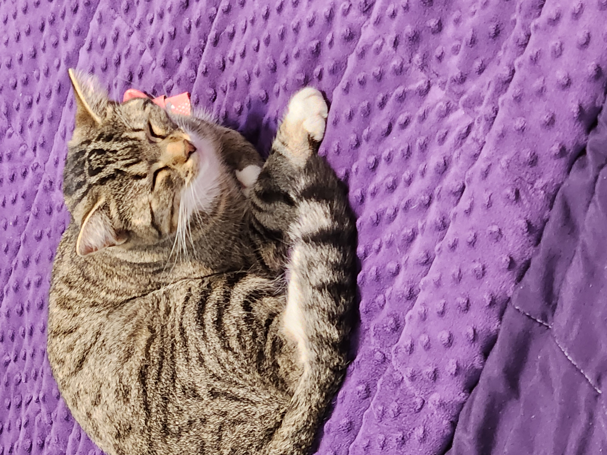

Jeffery was a very interesting cat to own. Here are a few facts about her:
- Jeffery was a housecat I had for about 2 years
- She ran away (but is very smart so I'm sure she's fine).
- She came to me at about 2 weeks old.
- Her odd naming came from calling her "Jeffery" before we knew she was a girl and the name stuck.
Things to know about Jeffery
Of all the cats I've owned, Jeffery was the least "cat-like". She was not very playful,
and had this look about her saying "I know what you're up to human." As the photo suggests, she was a brown stripey cat,
and although not as fluffy as Remah, her fur was still soft. She was the cat equivalent to a lap dog, and would often sit and nap on my lap while
I worked on school.
Personality
Jeffery's personality was that of a introvert: not very vocal, and shy of people except me. She liked taking naps and occasionally playing with
string when she could get ahold of it. She was somewhat of a pet project (pun fully intended), because when she was about 2 weeks old,
her mother abandoned Jeffery and her other siblings, and I took her in and raised her.